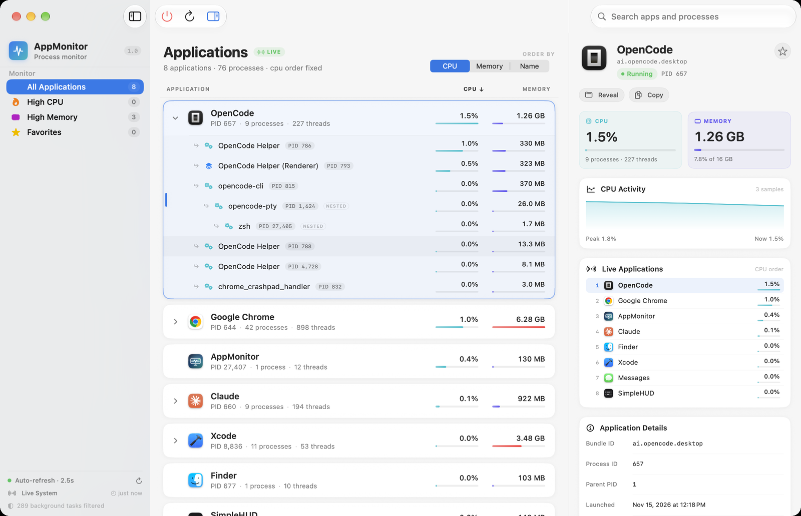

Rows that stay put
The main list is ordered once by CPU at launch, then holds still. Your click target never moves while you are reading it.
Live process monitoring for macOS
AppMonitor groups every helper under its parent app, freezes the main list so rows never jump, and keeps live CPU movement in the inspector where it belongs.

Why AppMonitor
Activity Monitor shows every process. AppMonitor shows the applications that actually matter, with the detail one click away.
The main list is ordered once by CPU at launch, then holds still. Your click target never moves while you are reading it.
The inspector's Live Applications card reorders continuously by current CPU, so movement never disrupts the main scan.
Chrome renderers, Xcode build workers, WebKit content processes, and Electron helpers nest under the app they belong to.
Match an app, bundle identifier, executable path, helper name, or PID. The parent app stays in the results with matching context.
High CPU, High Memory, and Favorites keep the useful apps close. Filtered background tasks are counted, never silently erased.
Built in SwiftUI and sampled through public libproc APIs. No root access, no account, and no telemetry leaving your Mac.
Stable by design
Most process monitors shuffle rows every refresh. That makes it hard to follow one app, click a helper, or compare two numbers. AppMonitor separates the two jobs.
Light appearance · main list fixed, Live Applications updating on the right.
Aggregate first
Parent rows combine the app with all of its helpers, so Chrome's true memory footprint is visible at a glance. Expand a row to inspect every process, PID, role, and thread count.
Built for scanning
Relative usage bars make heavy hitters obvious without reading every percentage. The inspector adds a CPU sparkline, bundle metadata, and copy or reveal actions.
Quietly honest
The green LIVE indicator reflects the real sample cadence. The sidebar shows the data source and exactly how many background tasks were filtered out.
Ready when you are
A signed, universal build for macOS 14 or later. Unzip it, drop it in Applications, and open it.
UnzipAppMonitor.zip anywhere you like.
MoveAppMonitor.app into your Applications folder.
Openit. If Gatekeeper asks, right-click the app and choose Open once.
Version 1.0 · 2.5 MB · Universal binary · Ad-hoc signed
SHA-256 7cb1c97bfc12d5a5a3ebaabfc4f3bbe8bb3369e9d2cea2f534a73bf0a256242d